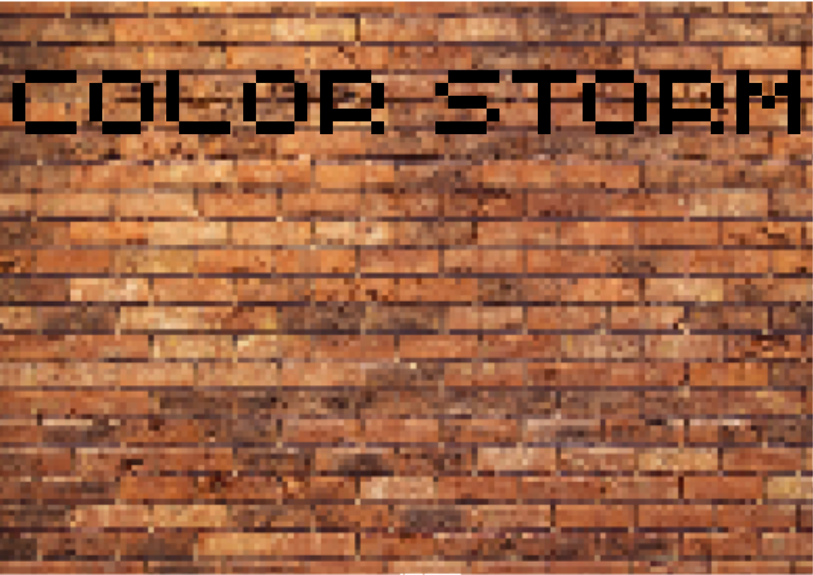

Color Storm

Un jeu 2D dont je ne suis pas fier. C'était mon premier jeu, et j'ai dû le faire en une semaine (c'était pour une JAM), donc il est pas ouf. Mais je l'ai quand même mis ici pour montrer que j'ai commencé à faire des jeux avant Bleach. Le jeu aura peut-être une mise à jour un jour, mais je ne sais pas quand. Pour l'instant je suis concentré sur La déchéance du Slime le plus faible de SlimeCity, et Bleach.
Complétion estimée : Je ne sais pas